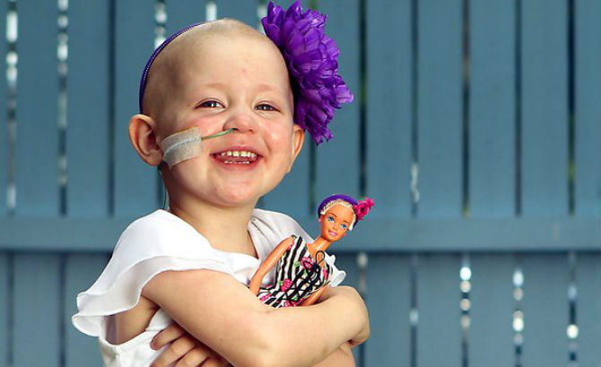

Постојат повеќе начини за третман на карциномот кои можат да се користат самостојно или во комбинација, хемотерапија, хирургија, зрачна терапија, хормонотерапија и имунотерапија. Хемотерапијата се користи во лекувањето уште од 1940 година, а голем разбој доживува во седумдесеттите години благодарение на откривањето на многу други лекови. Таа има за цел да ги елиминира канцерозните клетки на сите места во телото и ги убива директно или го спречува размножувањето на туморните клетки. Хемотерапијата делува на сите видови клетки па дури и на оние кои не се гледаат при испитувањата.
Со хемотерапија може да се почне пред хирушката интервенција и тогаш зборуваме за неоадјувантна хемотерапија. Таа има за цел да ја намали големината на туморот со што ќе го олесни хируршкиот третман. Палијативната хемотерапија има за цел да лекува метастатска болест. Со хемотерапија може да се почне по добивањето на резултатите од повеќе испитувања. Лекарот во зависност од резултатите го одредува видот на хемотерапијата и начинот на нејзиното примање. Времетраењето на хемотерапијата е различно и е адаптирано, индивидуално за секој болен и не зависи од тежината на болеста.
Хемотерапијата може да се прими на повеќе начини:
Интравенозно, директно во вената
Орално, лековите се добиваат преку уста
Интрамускулна, со инјектирање во мускулот
Многу ретко, директно во туморот
Освен хемотерапијата постои уште еден начин а тоа е убивање на ракот со Гама нож. Тоа е метода која што се користи за третман на туморите на мозокот без хирушка интервенција и претставува научно докажана, неинванзивна, радиохирушка техника. Со примена на оваа метода е овозможено лекување на туморите од мозокот помали од 3,5см без хирушка интервенција. Третманите со Гама нож траат неколку часа и веднаш потоа пациентите можат да си одат дома.